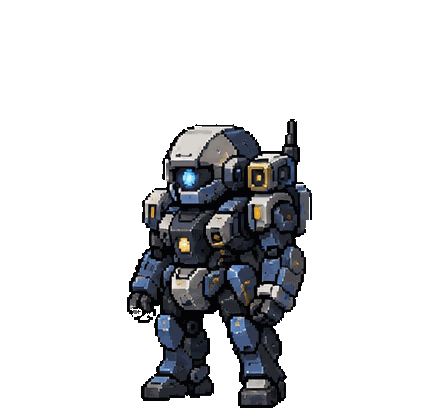
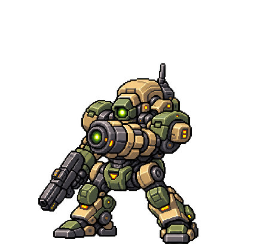
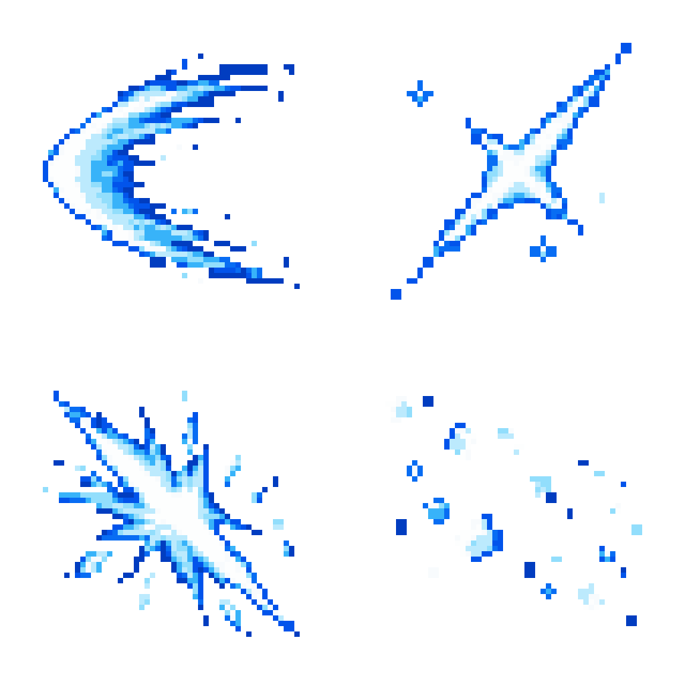
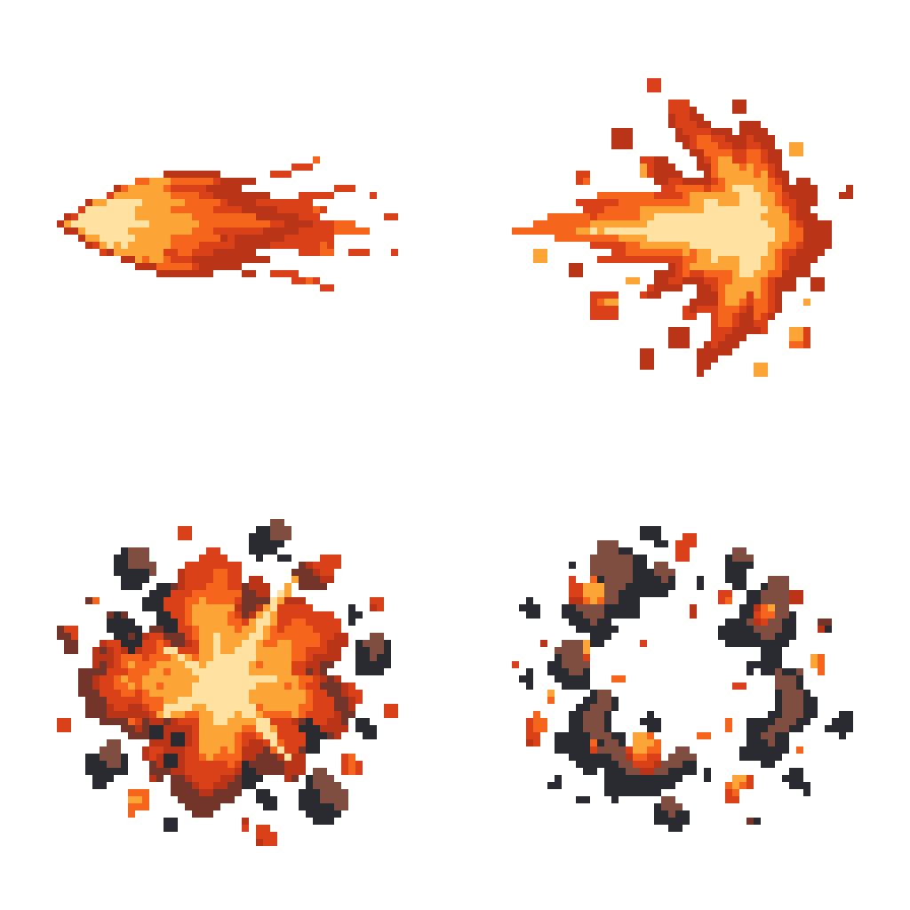
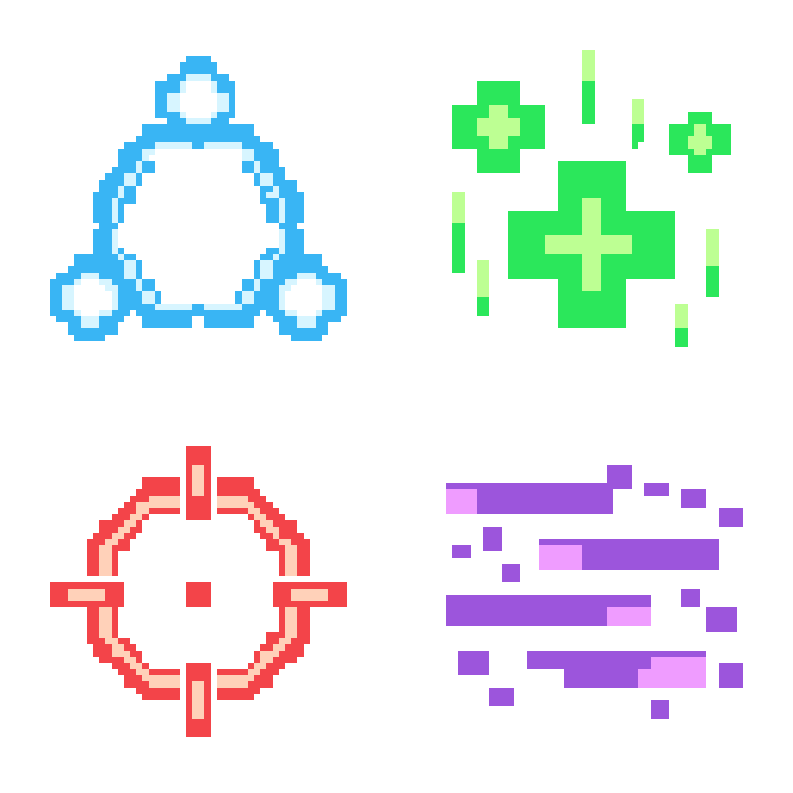

ROWAR · 공격 모션 시범 1차
이펙트 3종·KESTREL 승인 · AZURE 단검 후보 선택 / 최종 자세 승인 대기 · 게임 미연결 / 미커밋 / 미배포
기체 원본은 보존했습니다. 자세는 원본 PNG를 참고한 편집본입니다. 개별 장갑·관절의 세부 픽셀까지 동일하다는 의미는 아니므로 기체별로 확인해 주세요.
AZURE vs KESTREL 실제 재생 보기 →
평타 / 스킬 / 상태 · 좌우 기체 교체 · 0.5 / 1 / 2 / 4배속
새 AZURE 단검 6프레임 휘두르기 →
단일 자세와 별개의 연속 동작 후보 · 사용자 검수 대기
공격 자세 · 원본과 비교




AZURE 맨손 자세는 반려되었습니다. 사용자 지시에 따라 칼을 추가했고, 긴 검 대신 선택한 단검 참격 후보로 교체했습니다. KESTREL과 이펙트는 승인본 그대로입니다. 캔버스 440×420 · 원본 키 100% · 발끝 y407 · 원본 파일 보존.
승인된 이펙트 · 각 시트 2×2



1024×1024 RGBA · 논리 64×64/칸 · 시트 전체 최대 8색 · 이진 알파 · 칸 여백 최소 12.5%. 형태와 읽기 쉬움은 실전 재생에서 판단합니다.
AZURE 단검 자세의 최종 승인은 아직 대기 중입니다. 커밋·푸시·배포·전투 화면 연결은 하지 않았습니다. 나머지 이펙트 6종과 다른 기체 자세는 후속 작업입니다.